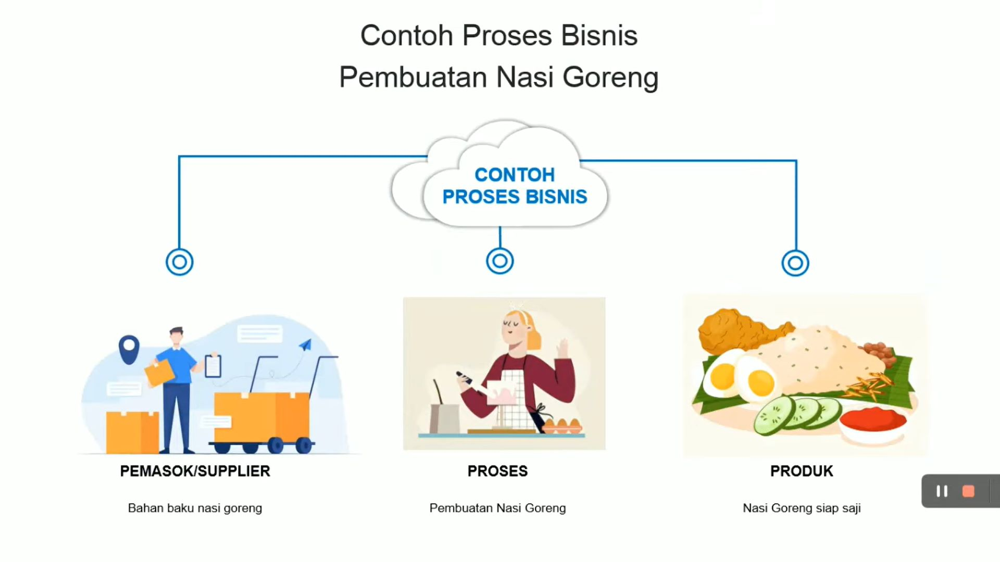

| Pengertian dan contoh bisnis dibidang Telekomunikasi |
|---|
| Proses bisnis merupakan serangkaian kegiatan yang dilakukan secara terencana, terstruktur, dan saling terhubung dengan tujuan menghasilkan produk atau jasa guna memperoleh keuntungan (laba).
Bisnis bisa dilakukan di bidang berbagai bidang, mulai dari manufaktur, otomotif, dan kuliner.
Tidak terkecuali juga proses bisnis di bidang Teknik Jaringan Komputer-Telekomunikasi (TJKT).Proses bisnis di bidang Teknik Jaringan Komputer-Telekomunikasi di antaranya seperti start-up pembuatan produk aplikasi, situs web, instalasi komputer dan internet.
Proses bisnis dibidang Telekomunikasi
Proses operasional merupakan proses primer atau awal dalam memulai bisnis di bidang TJKT. Proses ini terdiri atas tiga tahapan yakni pembuatan produk, pemasaran produk, dan layanan pelanggan yang ditawarkan. Proses bisnis di bidang TJKT yang kedua adalah proses pendukung alias sekunder. Proses sekunder ini merupakan proses yang mendukung operasional sehari-hari sebuah instansi perusahaan atau organisasi untuk melakukan proses bisnis. Proses dukungan secara sederhana berguna memastikan bisnis akan terus berjalan. Tahap terakhir dalam proses bisnis di bidang TJKT adalah manajemen. Proses manajemen juga melibatkan beberapa tahapan mulai perencanaan, pemantauan, hingga pengawasan. Proses manajemen akan mengatur aktivitas, tata kelola, serta manajemen strategis perusahaan guna mencapai proses primer dan sekunder yang efisien serta efektif. Contoh proses bisnis dibidang TJKT: Perusahaan Pengembang Situs Web Penjualan:
Manfaat proses bisnis dibidang Telekomunikasi:
Contoh bisnis nasi goreng  |